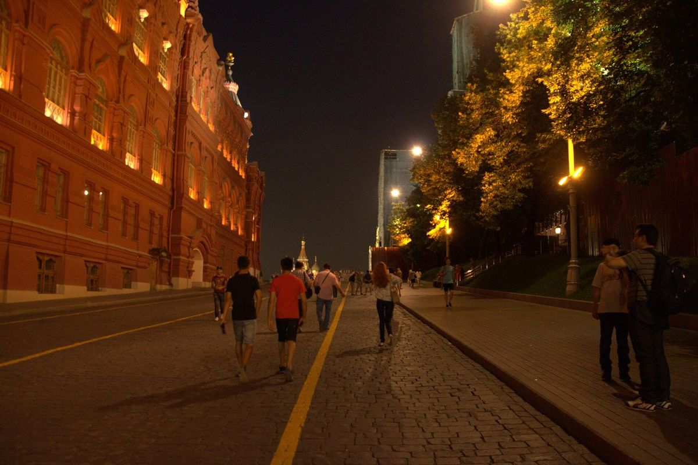

День 06 · среда, 11 ноября
Конференция внизу, вечер — как получится
У тебя конференция в нашем же отеле и ужины там же. У меня офис. Вечер — как получится.

- Гостиница
- AZIMUT Смоленская
- Конференция — в конференц-зале нашего отеля: из номера до зала две минуты
- У меня рабочий день
Вечер без меня
Ужин в отеле — у тебя все ужины там
Иногда бывают встречи со всеми участниками — тогда вечер идёт в компании
Как ты написала
- Ужины у тебя в отеле, а после семинаров иногда бывают встречи со всеми участниками. Значит, этот вечер не наш — и это совершенно нормально.
- Но если выпадет свободный вечер, я только за: пойдём просто гулять, без брони и без программы.
Если выпадет свободный вечер
- Арбат в двух шагах от отеля — хороший вариант «выйти на полчаса и вернуться через два».
- Или встречаемся в центре: скажешь куда, и я приеду.
ℹ️ Про планы
Всё держим свободным: у конференции своя программа, у меня — рабочий день. Как только станет понятно, я подстроюсь.